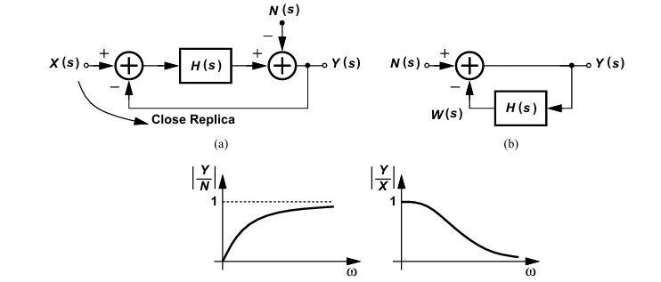

Razavi
Analysis and design of Data converter
21章
オーバーサンプリング＋ノイズシェーピングによって帯域内ノイズを低減
- オーバーサンプリングの効果
例えば、fsを倍にすると、帯域内の量子化雑音は3dB減少する
- ΔΣ変調による効果
量子化雑音がノイズシェーピングされる
雑音から見るとハイパス特性、入力信号から見るとローパス特性になる

以下ノイズシェーピング解説
図よりノイズの伝達関数は以下のようになります。
N(s)Y(s)=1+H(s)1
H(s) は積分器なので H(s)=s1 となり、代入すると以下のようになります。
N(s)Y(s)=1+ss
したがって、それぞれ以下の特性を持つことがわかります。
ノイズはハイパス特性
N(s)Y(s)=1+ss
入力信号はローパス特性
X(s)Y(s)=1+s1
以下伝達関数がハイパス特性となる解説
s=jω を代入すると、
H(jω)=1+jωjω
振幅（絶対値）をとると、
∣H(jω)∣=1+ω2ω
ω→0 の時、
∣H(jω)∣=0
ω→∞ の時、
∣H(jω)∣=1
上記より、高域になるほどゲインが1に近づくためハイパス特性となります。
予備知識
離散時間の積分と連続時間の積分
1−z−11
s1